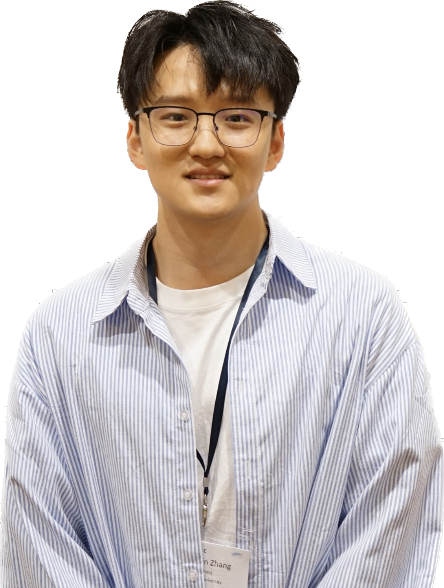

|  |
|
I am currently a research intern at Carnegie Mellon University surpervised by Prof. Zhihao Jia and also a master student at Tsinghua University supervised by Prof. Yong Jiang. My research interests includes data stream structure and algorithms design, programmable swtiches, machine learning, and large language model. Previously, I received my B.S. at the CS department of Xidian University.
Zhengxin Zhang, Qing Li, Guanglin Duan, Dan Zhao, Jingyu Xiao, Guorui Xie, and Yong Jiang. “Pontus: Finding Waves in Data Streams.” ACM SIGMOD International Conference on Management of Data (SIGMOD), June 2023.
Zhengxin Zhang*, Yucheng Huang*, Guanglin Duan*, Qing Li, Dan Zhao, and Yong Jiang. “Metis: Understanding and Enhancing Regular Expressions in Network.” Neural Information Processing Systems (NeurIPS), December 2023. (* Equal Contribution.)
Zhengxin Zhang, Guanglin Duan*, Yucheng Huang*, Qing Li, Dan Zhao, and Yong Jiang. “Regular Expression Matching in the Data Plane.” Under review. USENIX Symposium on Networked Systems Design and Implementation (NSDI), May 2024. (* Equal Contribution.)
| 2018-2023 | Ph.D. in Computer Science and Engineering, HKUST |
| GPA 4.188 | |
| 2013-2017 | B.E. in Information Engineering, CityU |
| GPA 4.07, Rank 1/74 |
SENG PhD Research Excellence Award 2023 (one awardee per year), School of Engineering, HKUST
ACM SIGMOD Research Highlight Award 2023, ACM SIGMOD
ACM SIGMOD Best Paper Award 2022, ACM SIGMOD
RedBird Academic Excellence Award 2018, 2022, 2023, HKUST
Hong Kong PhD Fellowship 2018-2022, RGC of Hong Kong
Top Anchor Award 2017 (one awardee in major Information Engineering per year), Department of EE, CityU
CityU Scholarship 2016-2017, CityU
Outstanding Student Prize 2015, Department of EE, CityU
CityU Mainland Entrance Scholarship 2013-2017, CityU
PC Member: NeurIPS workshop 2023, ICDE 2024
Reviewer: Journal of Privacy and Confidentiality
| Jun 2019 to Sep 2019 | Alibaba Innovative Research(AIR) Internship in Alibaba, Hangzhou |
| Topic: Materialized view |
|
| Jul 2017 to May 2018 | Research Assistant at CityU supervised by Prof. Shuaicheng Li |
| Topic: Bioinfomatics |